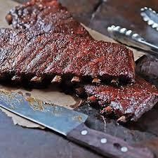

Ribs

Description
The following recipe will make a delicious batch of barbecue ribs for all to enjoy.
Ingredients
Base Ingredients
- 2 slabs pork spare ribs
- Kansas City barbecue sauce
Dry Rub Ingredients
- 2 cups brown sugar
- 1/2 cup dry mustard
- 1 tablespoon cayenne pepper
- 1 tablespoon smoked paprika
- 1 tablespoon garlic powder
- 1 tablespoon onion powder
- 1 tablespoon salt
- 1/2 cup canola oil
- 2 teaspoons ground black pepper
- 1/2 teaspoon vanilla
Barbecue Sauce Ingredients
- 2 tablespoons vegetable oil
- 1 diced small onion
- 3 cups water
- 1 cup tomato paste
- 1/2 cup brown sugar
- 2/3 cup apple cider vinegar
- 1/4 cup molasses
- 1/2 teaspoon cayenne pepper
- 1/4 teaspoon paprika
- 1 teaspoon salt
- 1 teaspoon ground black pepper
Instructions
-
Remove the thin white membrane off of the bone-side of the ribs. Mix together the brown
sugar, dry mustard, cayenne, paprika, garlic powder, salt and pepper in a small bowl.
Massage the rub into the ribs and let sit for one hour or up to overnight.
-
If cooking on the grill, place the ribs meat-side down next to medium-hot coals that are
about 225 degrees fahrenheit. The indirect heat will cook them slower, making them tender.
Allow to cook for one hour. Turn ribs every half hour and baste with the Kansas City Barbecue Sauce.
Cook until the ribs are tender, about three to four hours.
-
If cooking indoors, place in a roasting pan with a rack. Slather the ribs with the Kansas City Barbeque
Sauce and tent a piece of aluminum foil over them. In a preheated 350 degrees F. oven, place the ribs,
basting with the sauce every 30 minutes and removing the foil for the last 30 minutes and cooking until
fork tender, about 2 1/2 to 3 hours.
Instructions for Barbecue Sauce
-
In a small sauce pot on medium-high heat, heat the oil and add the onion, cooking until translucent.
-
Add the remaining ingredients in a large bowl and mix together. Add to sauce pan and let simmer for 30 to 45 minutes. Use to baste the pork spare ribs.